ggplot(data = otter_data)7 Workshop 7 - Data Visualisation
7.1 The Route Through the Workshop
In this workshop we will cover:
- Understanding ggplot2: the five components of every plot and how they fit together
- Building a plot layer by layer: starting from an empty canvas and adding one instruction at a time
- Aesthetics and geoms: how variables are mapped to visual features, and which shapes suit which data
- Choosing a plot: working out which plot to use from the number and type of your variables
- Seeing the whole distribution: why no single plot shows everything, and what different plots reveal about the same data
By the end of this workshop you will be able to look at a set of variables, decide how to plot them, and explain why that plot is a good choice.
7.1.1 Loading packages and data
Today you will need the packages tidyverse and patchwork. Install them from the console using install.packages() if you have not already, then load them at the top of your script.
We will work with the newest version of the otter data throughout. Please read in otter_data_2.csv from the data folder and call it otter_data.
Tip
ggplot2 is part of tidyverse, so loading tidyverse gives you every function used in this workshop except patchwork.
7.2 Understanding ggplot2
Throughout this module we have used the ggplot2 package to visualise our data. It is based on the Grammar of Graphics, which means every plot is built in layers, added together with +. You start with a blank canvas and add one instruction at a time.
Every plot is made from five components:
- Data: the data frame that contains the variables you want to plot
- Aesthetics: the mapping of variables to visual features, such as the x and y axes, colour and size
- Geoms: the shape used to draw the data, such as points, bars or boxes
- Labels: the titles and axis labels
- Theme: the overall look of the plot, such as the background, gridlines and font size
7.2.1 The syntax of ggplot2
Here is a template. Focus on the syntax and the order of the layers. It makes a scatterplot with a trend line, a custom colour scale, one panel per group and a minimal theme.
ggplot(data = my_data, aes(x = var1, y = var2, colour = group)) +
geom_point() + # layer 1: scatter points
geom_smooth(method = "lm") + # layer 2: linear trend line
scale_colour_brewer(palette = "Set1") + # customise the colour scale
facet_wrap(~ group) + # one panel per group
theme_minimal() # clean, non data stylingWhich line of the template splits the plot into one panel for each group?
7.2.2 Building a plot layer by layer
The tabs below build a plot from nothing. Click through them in order and notice what each new line adds.
ggplot() on its own only creates an empty canvas. R knows which data frame to use, but not what to draw.
ggplot(data = otter_data, aes(x = fish_index, y = spraints))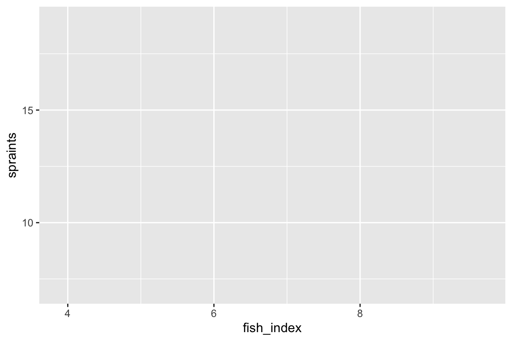
aes() is short for aesthetics. It maps variables to the plot, here fish_index to the x axis and spraints to the y axis. The axes now appear, but nothing is drawn yet.
ggplot(data = otter_data, aes(x = fish_index, y = spraints)) +
geom_point()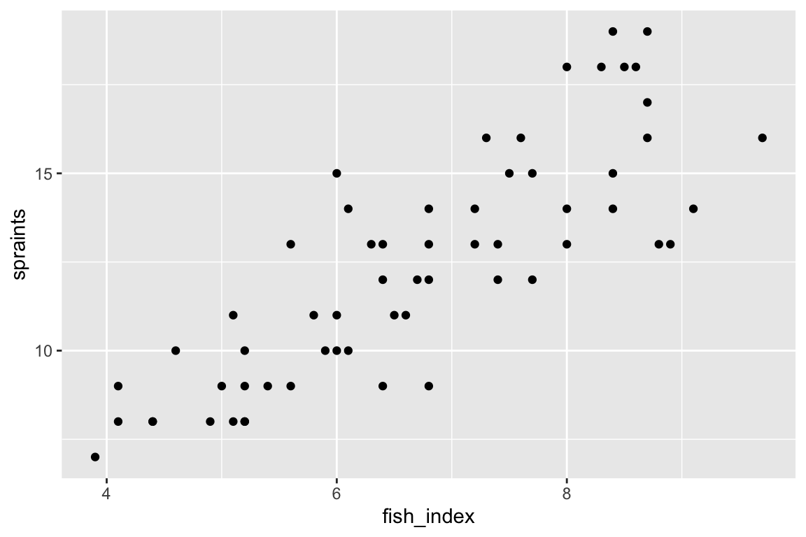
geom_point() tells ggplot to draw each otter as a point. The + at the end of the line is what adds a new layer.
ggplot(data = otter_data, aes(x = fish_index, y = spraints)) +
geom_point() +
labs(x = "Fish availability index",
y = "Spraint count")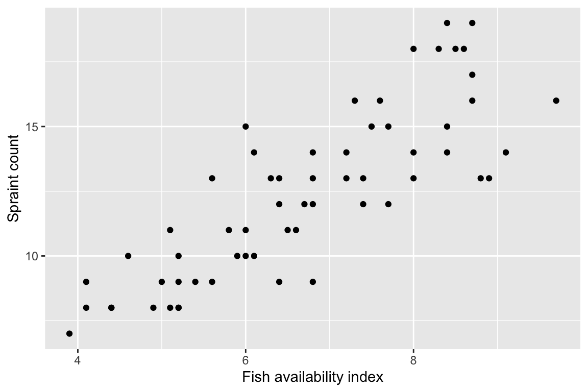
labs() replaces the default axis labels, which are just the column names, with something readable.
ggplot(data = otter_data, aes(x = fish_index, y = spraints)) +
geom_point() +
labs(x = "Fish availability index",
y = "Spraint count") +
theme_minimal(base_size = 13)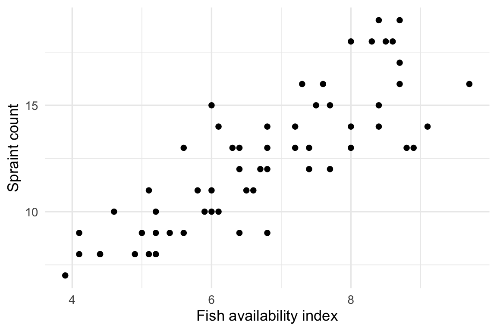
theme_minimal() removes the grey background, and base_size makes the text larger and easier to read.
Which line of code adds the points to the plot?
What does aes() do?
What happens if you run ggplot(otter_data, aes(x = fish_index, y = spraints)) without adding a geom?
7.2.3 Your turn
Tip
You will need the actual variable names, so think back to the code you can use to check out the data, or use the Function Glossary to help you.
Fill in the blanks to build a scatterplot of body length against body mass. You can put either variable on either axis.
The data frame is:
The variable on the x axis is:
The variable on the y axis is:
The geom that draws each otter as a point is:
ggplot(data = ___, aes(x = ___, y = ___)) +
___()ggplot(data = otter_data, aes(x = length_cm, y = mass_kg)) +
geom_point()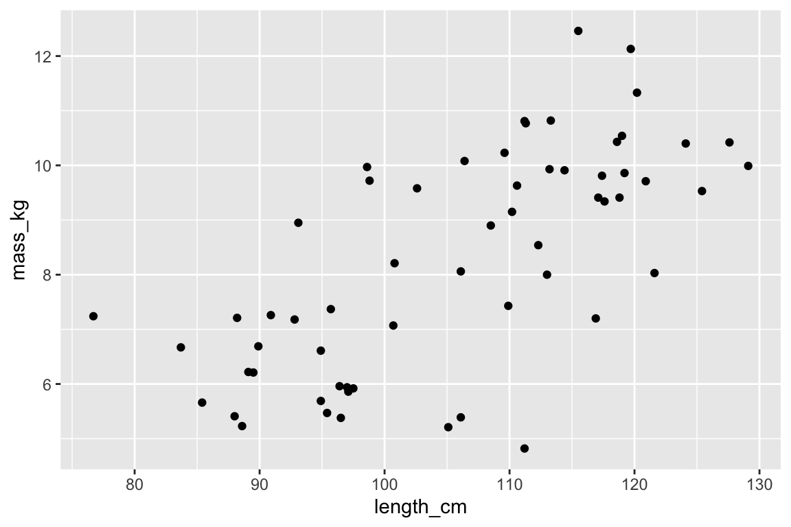
A student puts length_cm on both axes. What will the plot show?
Tip
A common mistake: the + must go at the end of a line, not the start of the next one. If you put it at the start, R thinks the code has finished and throws an error.
7.3 Aesthetics and Geoms
7.3.1 Aesthetics
An aesthetic is a visual feature of the plot. Position on the x and y axes is the most important one, but you can also map variables to colour, size and shape, which lets one plot show more than two variables.
| Aesthetic | What it controls |
|---|---|
x, y |
Position on the axes |
colour |
The colour of points and lines, or the outline of shapes |
fill |
The colour inside shapes such as bars and boxes |
size |
The size of points |
shape |
The shape of points |
alpha |
Transparency, from 0 (invisible) to 1 (solid) |
There are two different ways to use an aesthetic, and they behave differently:
- Mapped inside
aes(): the feature changes according to a variable in the data - Set outside
aes(): the feature is a fixed value that applies to every observation
ggplot(otter_data, aes(x = length_cm, y = mass_kg, colour = sex)) +
geom_point(size = 2.5) +
labs(x = "Body length (cm)", y = "Body mass (kg)", colour = "Sex") +
theme_minimal(base_size = 13)
colour = sex is inside aes(), so each sex gets its own colour and ggplot adds a legend.
ggplot(otter_data, aes(x = length_cm, y = mass_kg)) +
geom_point(colour = "#F8766D", size = 2.5) +
labs(x = "Body length (cm)", y = "Body mass (kg)") +
theme_minimal(base_size = 13)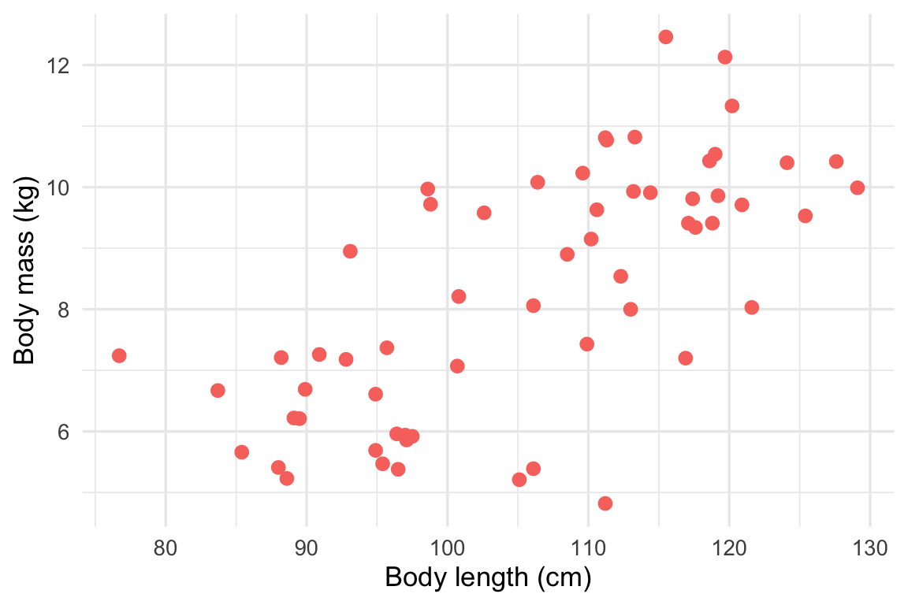
colour = "#F8766D" is outside aes(), so every point is the same colour and there is no legend.
A student wants every point in a scatterplot to be red, whatever the data say. Where should colour = "red" go?
7.3.2 Geoms
A geom is the shape ggplot draws for your data. The data and the aes() mapping stay the same, and the geom decides how they are displayed. Change the geom and the same data becomes a different plot.
Each geom expects certain kinds of variable, so the main skill is matching the geom to your data.
| Geom | Draws | Needs | Use for |
|---|---|---|---|
geom_point() |
One point per row | Two numeric variables | Scatterplots |
geom_line() |
A line joining points in order | An ordered x and a numeric y | Trends, and means across ordered groups |
geom_bar() |
Bars, with R counting the rows | One categorical variable | Counts per category |
geom_col() |
Bars, with you giving the heights | One categorical and one numeric variable | Plotting values you have already calculated |
geom_histogram() |
Bars of binned counts | One numeric variable | The shape of one variable |
geom_boxplot() |
A box and whiskers | A categorical x and a numeric y | Comparing a variable across groups |
geom_smooth() |
A fitted line | Two numeric variables | Trends and regression lines |
7.3.2.1 The same data with different geoms
The tabs below show seven geoms on the otter data. As you click through, notice what kind of variable each one needs.
ggplot(otter_data, aes(x = fish_index, y = spraints)) +
geom_point(colour = "#F8766D", size = 2.5) +
labs(x = "Fish availability index", y = "Spraint count") +
theme_minimal(base_size = 13)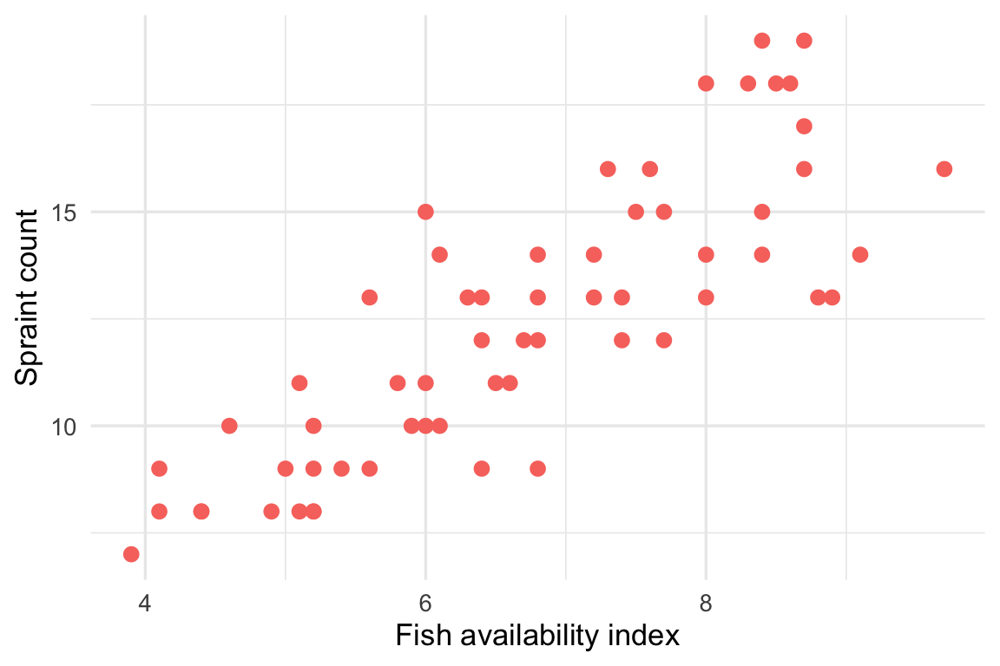
One point per otter. Both axes are numeric, so each point sits where its two values meet.
ggplot(otter_data, aes(x = fish_index, y = spraints)) +
geom_point(colour = "#F8766D", size = 2.5) +
geom_smooth(method = "lm", colour = "black", se = TRUE) +
labs(x = "Fish availability index", y = "Spraint count") +
theme_minimal(base_size = 13)
geom_smooth() adds a fitted line on top of the points. method = "lm" fits a straight line, the same one lm() fits. The grey band is the confidence interval, and se = FALSE removes it.
ggplot(otter_data, aes(x = spraints)) +
geom_histogram(binwidth = 1, fill = "lightblue", colour = "black") +
labs(x = "Spraint count", y = "Frequency") +
theme_minimal(base_size = 13)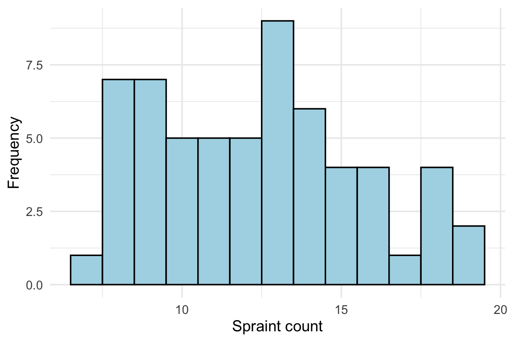
Only one variable is needed. R bins the values and counts how many otters fall into each bin, so there is no y in aes().
ggplot(otter_data, aes(x = site, y = spraints, fill = site)) +
geom_boxplot(colour = "black") +
labs(x = "Site", y = "Spraint count") +
theme_minimal(base_size = 13) +
theme(legend.position = "none")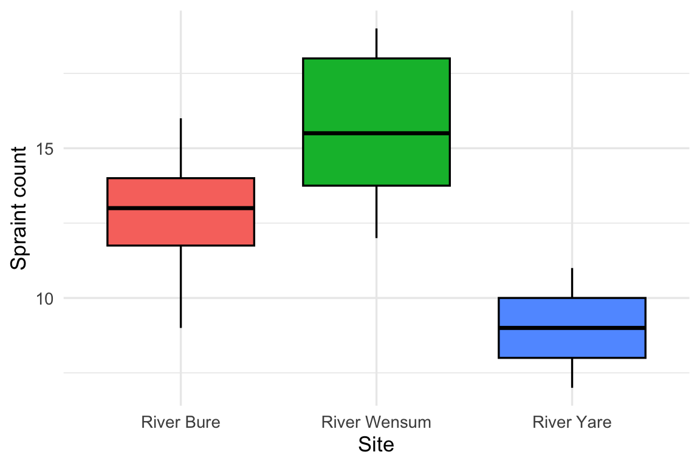
A categorical x and a numeric y. Each box summarises one group, so you can compare groups directly.
ggplot(otter_data, aes(x = site)) +
geom_bar(fill = "lightblue", colour = "black") +
labs(x = "Site", y = "Number of otters") +
theme_minimal(base_size = 13)
geom_bar() counts the rows in each category for you. It plots how many otters, not how many spraints.
otter_data %>%
group_by(site) %>%
summarise(mean_spraints = mean(spraints)) %>%
ggplot(aes(x = site, y = mean_spraints)) +
geom_col(fill = "lightblue", colour = "black") +
labs(x = "Site", y = "Mean spraint count") +
theme_minimal(base_size = 13)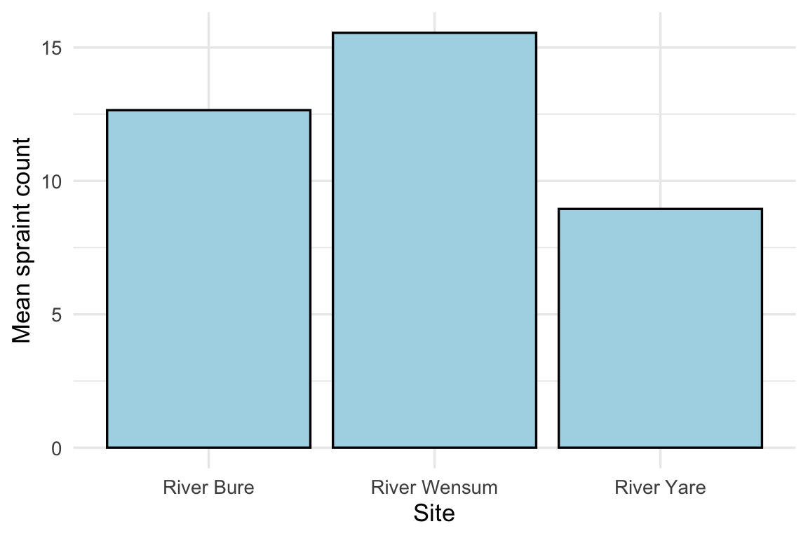
geom_col() draws bars at the heights you provide. Here we worked out the mean per site first and then plotted it.
otter_data %>%
group_by(site, season) %>%
summarise(mean_spraints = mean(spraints), .groups = "drop") %>%
ggplot(aes(x = site, y = mean_spraints, colour = season, group = season)) +
geom_line(linewidth = 1.2) +
geom_point(size = 3) +
labs(x = "Site", y = "Mean spraint count", colour = "Season") +
theme_minimal(base_size = 13)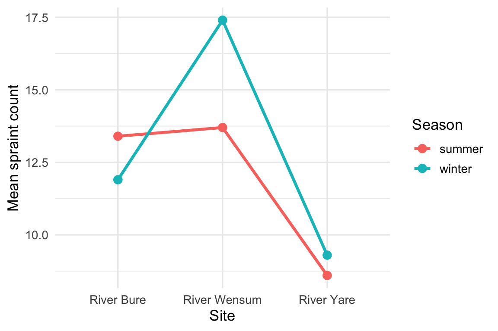
geom_line() joins points in order, and group = season tells it which points belong to the same line. This is the interaction plot from earlier workshops. The lines here join group means so that we can compare the two seasons across sites. A line across unordered categories is not a trend, so do not use one to join raw observations.
7.3.2.2 Layering geoms
Geoms are layers, so you can stack several in one plot. The order matters, because later layers are drawn on top of earlier ones.
ggplot(otter_data, aes(x = site, y = spraints)) +
geom_boxplot(fill = "lightblue", colour = "black", outlier.shape = NA) +
geom_jitter(width = 0.1, size = 2, colour = "#F8766D") +
labs(x = "Site", y = "Spraint count") +
theme_minimal(base_size = 13)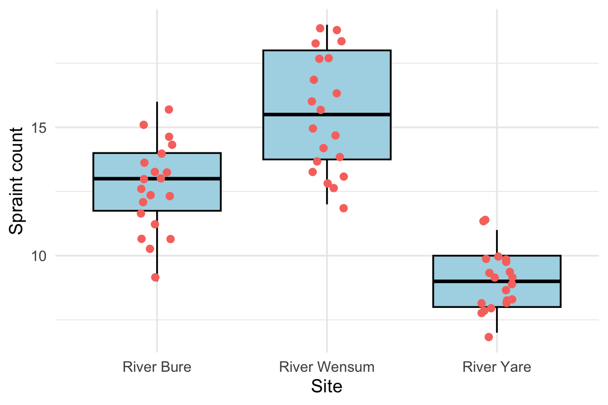
The boxplot is drawn first and the jittered points sit on top of it. If you swapped the two lines, the box would cover the points.
7.3.2.3 Check your understanding
Which geom would you use to show how many otters were recorded in each age class?
What is the difference between geom_bar() and geom_col()?
A student writes ggplot(otter_data, aes(x = spraints)) + geom_point(). Why does this give an error?
To draw a regression line over a scatterplot, you add with method = "lm".
Tip
When you are unsure which geom to use, ask two questions. How many variables am I plotting? Are they categorical or numeric? The table at the start of this section answers the rest.
7.4 Choosing How to Visualise Your Data
So far you have been told which plot to make. In real analysis, nobody does that for you. You have to look at your data and decide.
Two questions get you most of the way there:
- How many variables am I plotting?
- What type is each variable (categorical, discrete or continuous)?
Here are the variables in the otter dataset:
| Variable | Type |
|---|---|
site, season, sex, age_class |
Categorical |
spraints, tick_count |
Discrete (counts) |
length_cm, mass_kg, fish_index |
Continuous |
A decision guide for choosing a plot type:
| What you have | A good first plot | Main layer |
|---|---|---|
| One categorical variable | Bar chart | geom_bar() |
| One continuous or count variable | Histogram | geom_histogram() |
| Continuous variable split by a category | Boxplot | geom_boxplot() |
| Two continuous variables | Scatterplot | geom_point() |
| Continuous variable split by two categories | Grouped boxplot | geom_boxplot() with fill = |
| Two continuous variables plus a category | Coloured scatterplot | geom_point() with colour = |
| One variable, one panel per group | Faceted plot | facet_wrap() |
These are starting points, not rules. Often more than one plot is reasonable, and the best choice depends on the question you are asking.
7.4.1 Challenge 1: How many otters were surveyed at each site?
You want to compare how many otters were recorded at each of the three rivers.
Which plot would you choose?
Step 1: Look at what the data are.
site is a categorical variable. Each row in the data frame is one otter, and each otter has one site written next to it. We have no number to plot, only labels. The question is really: how many rows have each label?
Step 2: See what “counting” means.
This code does the counting by hand, so you can see what the plot will show:
otter_data %>%
count(site)# A tibble: 3 × 2
site n
<chr> <int>
1 River Bure 20
2 River Wensum 20
3 River Yare 20Each site now has one number: how many otters were recorded there. A bar chart draws exactly these numbers as bars. Here every site has the same number, which tells you the survey was balanced.
Step 3: Let geom_bar() do the counting.
geom_bar() counts the rows in each category for you, so you only give it an x variable. You do not give it a y.
ggplot(otter_data, aes(x = site)) +
geom_bar(fill = "lightblue", colour = "black") +
labs(x = "Site", y = "Number of otters") +
theme_minimal(base_size = 13)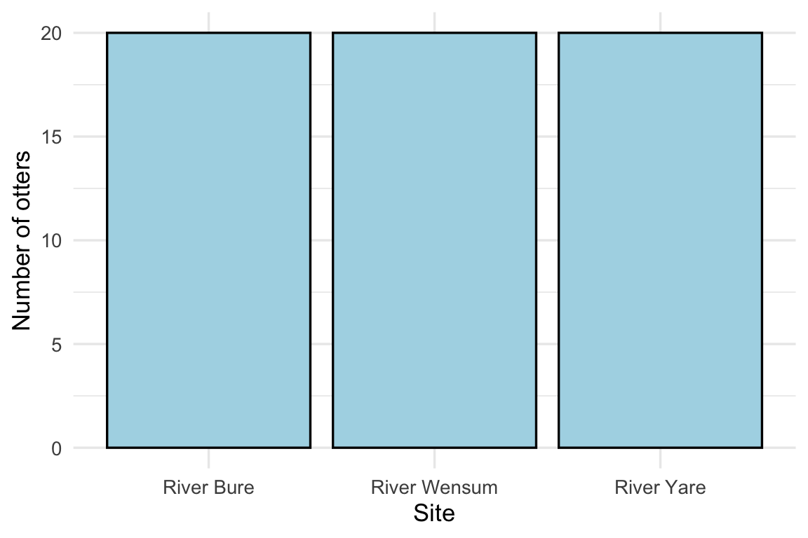
Why the other options are wrong:
| Option | Why it does not fit |
|---|---|
| Histogram | Histograms cut a continuous variable into bins. site has no numbers to cut up. |
| Scatterplot | Needs two variables, and we only have one. |
| Boxplot | Needs a continuous variable to summarise, and we only have categories. |
Note
geom_bar() or geom_col()?
Use geom_bar() when R should count the rows for you, as here. Use geom_col() when you already have the heights, for example after running count(site). Both draw bars, but geom_bar() takes only x and geom_col() needs both x and y.
7.4.2 Challenge 2: What does the distribution of body mass look like?
You want to know whether body mass is symmetrical, skewed, or has more than one peak.
Which plot would you choose?
Step 1: Look at what the data are.
mass_kg is one continuous variable. Each otter has a measured weight, and we want to see how those weights are spread out.
Step 2: Build the plot.
A histogram cuts the range of mass_kg into bins and counts how many otters fall into each one. The shape of the bars shows the shape of the distribution.
ggplot(otter_data, aes(x = mass_kg)) +
geom_histogram(binwidth = 0.5, fill = "lightblue", colour = "black") +
labs(x = "Body mass (kg)", y = "Frequency") +
theme_minimal(base_size = 13)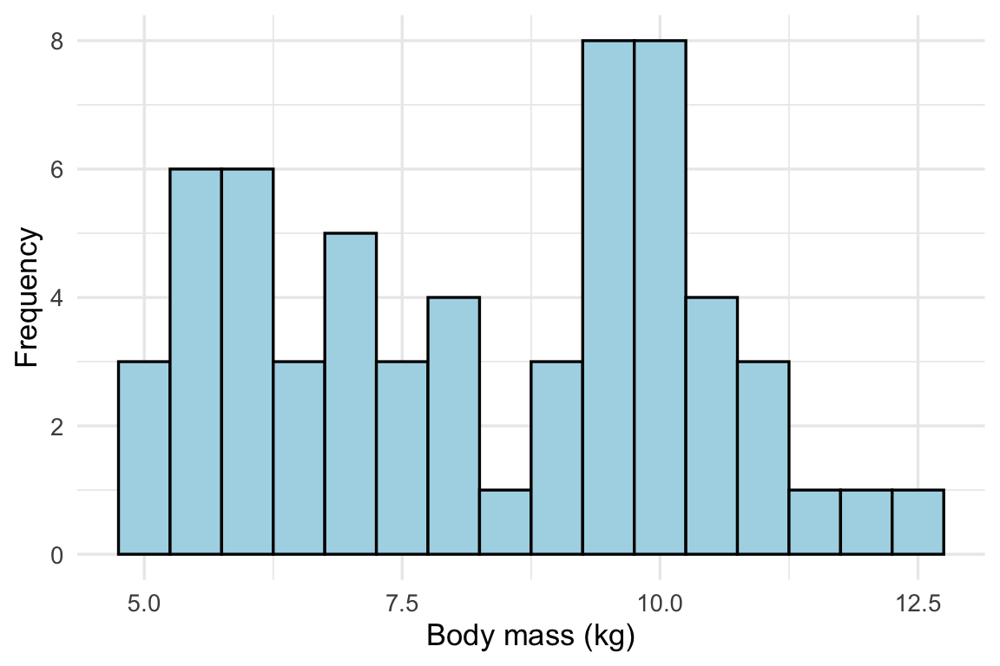
Why the other options are wrong:
| Option | Why it does not fit |
|---|---|
| Bar chart | Bar charts count the rows in each category. mass_kg has no categories, so every otter would get its own bar and the shape would be lost. |
| Scatterplot | Needs two variables. We only have one, so there is nothing to put on the other axis. |
| Line plot | Joins points in a sequence, such as measurements over time. Body mass has no sequence, so a line would have no meaning. |
Note
Try changing binwidth. A very small value makes the plot spiky and a very large value hides the shape. It is worth trying a few before you decide what the distribution looks like.
7.4.3 Challenge 3: Do male and female otters differ in body length?
You have one continuous variable (length_cm) and one categorical variable with two levels (sex).
Which plot would you choose?
Step 1: Look at what the data are.
The question compares a continuous variable (length_cm) between groups (sex). So we need a plot that summarises the centre and spread of lengths separately for each sex, side by side.
Step 2: Build the plot.
A boxplot does this. Adding the raw points with geom_jitter() shows how many otters sit behind each box.
ggplot(otter_data, aes(x = sex, y = length_cm, fill = sex)) +
geom_boxplot(colour = "black", alpha = 0.7, outlier.shape = NA) +
geom_jitter(width = 0.1, size = 2) +
labs(x = "Sex", y = "Body length (cm)") +
theme_minimal(base_size = 13) +
theme(legend.position = "none")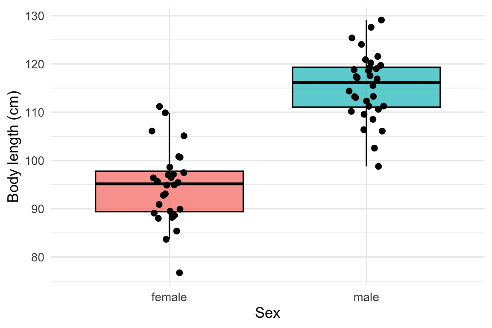
Why the other options are wrong:
| Option | Why it does not fit |
|---|---|
Histogram of length_cm only |
Mixes males and females together, so you cannot see whether the sexes differ. It ignores the question. |
Scatterplot of sex against length_cm |
Possible, but weak. The points stack in two vertical lines and overlap heavily, and it gives no summary of centre or spread. |
Bar chart of sex |
Only counts how many males and females there are. It says nothing about body length. |
Note
outlier.shape = NA hides the boxplot’s own outlier points, because geom_jitter() already draws every point. Without it, outliers would appear twice.
7.4.4 Challenge 4: Does fish availability relate to spraint count?
You have two numeric variables and you want to see whether they move together.
Which plot would you choose?
Now decide something else: which variable goes on the x axis? Think about which variable you believe is driving the other.
The explanatory variable (x) is and the response variable (y) is .
Step 1: Look at what the data are.
Both fish_index and spraints are numeric, and every otter has a value for each. The question is about how one changes as the other changes, so we need each otter to appear as one point at the meeting place of its two values.
Step 2: Build the plot.
ggplot(otter_data, aes(x = fish_index, y = spraints)) +
geom_point(colour = "#F8766D", size = 2.5) +
geom_smooth(method = "lm", colour = "black", se = TRUE) +
labs(x = "Fish availability index", y = "Spraint count") +
theme_minimal(base_size = 13)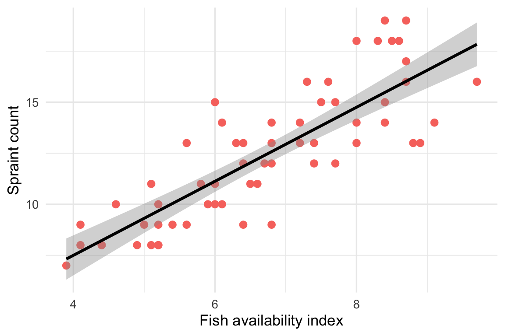
By convention, the variable you think is doing the explaining goes on the x axis and the variable you think is responding goes on the y axis.
Why the other options are wrong:
| Option | Why it does not fit |
|---|---|
| Bar chart | Counts rows in categories. Neither variable is a category, and a bar chart cannot show a relationship between two numbers. |
| Histogram | Shows the distribution of one variable. It cannot show how two variables relate to each other. |
| Boxplot | Summarises a numeric variable across groups. fish_index is continuous, so there are no groups unless you force the values into bins and lose detail. |
7.4.5 Challenge 5: Does the effect of season depend on the site?
You have one count variable (spraints) and two categorical variables (site and season).
What is the best way to show both categorical variables at once?
Step 1: Look at what the data are.
The question asks whether the effect of one category (season) changes across another (site). So both categories must be visible at once, with spraints as the measured value.
Step 2: Build the plot.
Mapping a second categorical variable to fill splits each box into side by side groups.
ggplot(otter_data, aes(x = site, y = spraints, fill = season)) +
geom_boxplot(colour = "black") +
labs(x = "Site", y = "Spraint count", fill = "Season") +
theme_minimal(base_size = 13)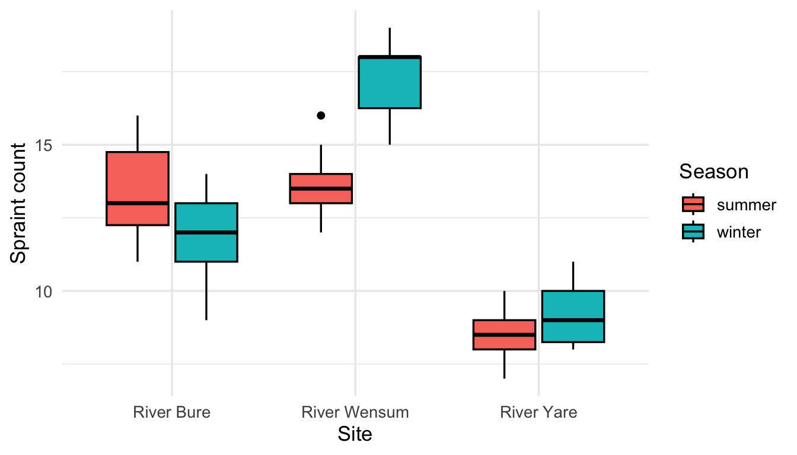
If you would rather show the means and see whether the lines cross, an interaction plot is another good choice:
otter_data %>%
group_by(site, season) %>%
summarise(mean_spraints = mean(spraints), .groups = "drop") %>%
ggplot(aes(x = site, y = mean_spraints, colour = season, group = season)) +
geom_line(linewidth = 1.2) +
geom_point(size = 3) +
labs(x = "Site", y = "Mean spraint count", colour = "Season") +
theme_minimal(base_size = 13)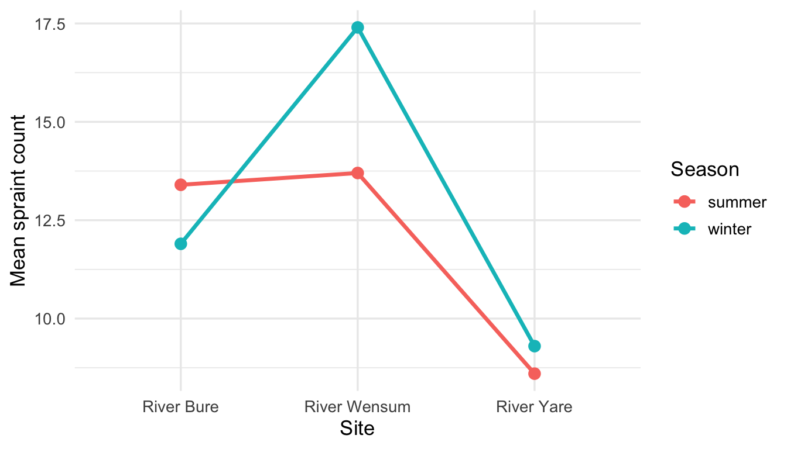
The boxplot shows the spread of the data. The interaction plot shows only the means, but makes a possible interaction easier to see. Neither is wrong.
Why the other options are wrong:
| Option | Why it does not fit |
|---|---|
| Two histograms, ignoring season | Throws away season, so you cannot tell whether the seasonal effect differs between sites. That is the whole question. |
Scatterplot of site against season |
Both variables are categories, so points land on a handful of grid positions and pile on top of each other. spraints is not shown at all. |
| One bar chart of total spraints | Adds everything together, which hides both the sites and the seasons. |
7.4.6 Challenge 6: Does the length and mass relationship differ between the sexes?
You have two continuous variables (length_cm and mass_kg) and a categorical variable (sex).
How could you show all three variables on one plot?
Step 1: Look at what the data are.
Two continuous variables relate to each other, so a scatterplot is the starting point. The third variable, sex, is a category, so we add it as a colour rather than as another axis.
Step 2: Build the plot.
ggplot(otter_data, aes(x = length_cm, y = mass_kg, colour = sex)) +
geom_point(size = 2.5) +
labs(x = "Body length (cm)", y = "Body mass (kg)", colour = "Sex") +
theme_minimal(base_size = 13)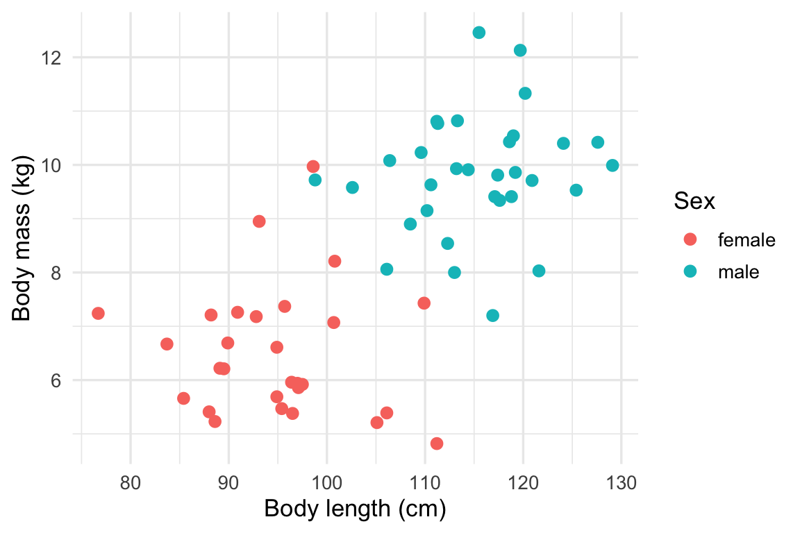
If the colours overlap too much, facet_wrap() gives each sex its own panel instead:
ggplot(otter_data, aes(x = length_cm, y = mass_kg)) +
geom_point(colour = "#F8766D", size = 2.5) +
facet_wrap(~ sex) +
labs(x = "Body length (cm)", y = "Body mass (kg)") +
theme_minimal(base_size = 13)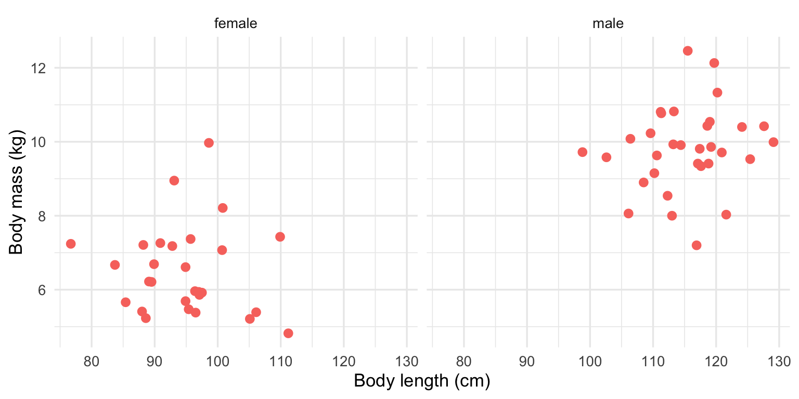
Colour keeps everything in one panel, which makes direct comparison easy. Facets avoid overlap, but you have to compare across panels.
Why the other options are wrong:
| Option | Why it does not fit |
|---|---|
| Histogram of both variables | A histogram shows one variable at a time, so it cannot show how length and mass relate to each other. |
Bar chart of sex with mean length |
Shows only one continuous variable, drops mass_kg, and reduces each sex to a single average. |
| Boxplot with both variables on one y axis | Length (cm) and mass (kg) are on completely different scales, so they cannot share an axis meaningfully. It also hides the relationship between them. |
7.4.7 Challenge 7: Is tick count normally distributed?
tick_count is a count variable and you suspect it is right skewed. You also want to check whether a log transformation would help.
What is the most useful way to show this?
Step 1: Look at what the data are.
You want to see the shape of one variable, and to compare that shape before and after a transformation. Histograms show shape, and placing two side by side makes the comparison direct.
Step 2: Build the plots.
otter_log <- otter_data %>%
mutate(log_tick_count = log(tick_count + 1))
plot_raw <- ggplot(otter_log, aes(x = tick_count)) +
geom_histogram(binwidth = 1, fill = "lightblue", colour = "black") +
labs(x = "Tick count", y = "Frequency", title = "Raw") +
theme_minimal(base_size = 13)
plot_log <- ggplot(otter_log, aes(x = log_tick_count)) +
geom_histogram(binwidth = 0.2, fill = "#7CAE00", colour = "black") +
labs(x = "Log(tick count + 1)", y = "Frequency", title = "Log transformed") +
theme_minimal(base_size = 13)
plot_raw + plot_log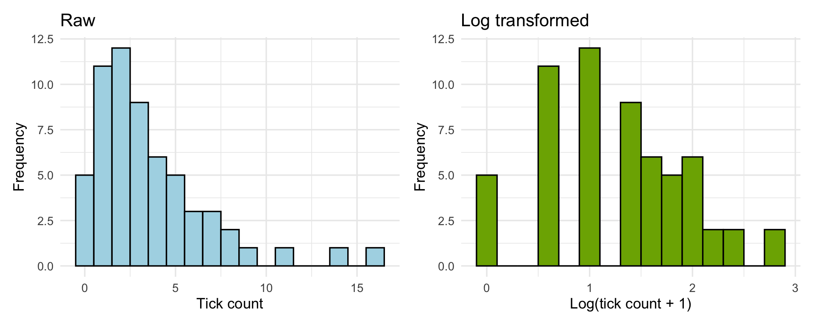
patchwork places two plots side by side with a simple +.
Why the other options are wrong:
| Option | Why it does not fit |
|---|---|
| Boxplot of raw counts only | A boxplot can hint at skew, but it does not show the shape of the distribution as clearly as a histogram, and it has no transformed version to compare with. |
| Scatterplot of tick count against otter ID | Otter ID is just a label, so its order means nothing. The plot would not show the distribution. |
| Bar chart of total ticks | Adds all the counts into one number, which hides the distribution completely. |
7.4.8 Challenge 8: You decide
This time there are no options. Choose any two variables from the otter dataset and decide how to plot them.
Work through these steps:
- Write down the two variables and their types.
- Choose a plot using the decision guide.
- Build it one layer at a time:
ggplot(), thenaes(), then a geom, thenlabs(), then a theme. - Ask yourself whether the plot actually answers a question.
A student plots site against season using geom_point(). Why is this a poor choice?
Why the right answer is right.
site has three values and season has two, so there are only six possible positions on the plot. Every otter at the same site and season lands on exactly the same spot, and you cannot tell whether a spot holds 2 otters or 20.
Why the other options are wrong:
| Option | Why it is wrong |
|---|---|
| Both variables are continuous | This is false. site and season are text categories, not numbers. |
| Scatterplots need a log transformation | This is false. Scatterplots work on raw numbers, and a transformation is only needed if the data are badly skewed. |
geom_point() cannot use text variables |
This is false. R will draw the plot without an error, which is exactly why it is a poor choice. It looks like a plot, but it tells you nothing. |
Some good pairings to try:
| Variables | Types | Plot to try |
|---|---|---|
age_class and mass_kg |
Categorical and continuous | Boxplot |
season and tick_count |
Categorical and count | Boxplot or faceted histogram |
mass_kg and fish_index |
Continuous and continuous | Scatterplot |
site and sex |
Categorical and categorical | Bar chart with fill = sex and position = "dodge" |
ggplot(otter_data, aes(x = site, fill = sex)) +
geom_bar(position = "dodge", colour = "black") +
labs(x = "Site", y = "Number of otters", fill = "Sex") +
theme_minimal(base_size = 13)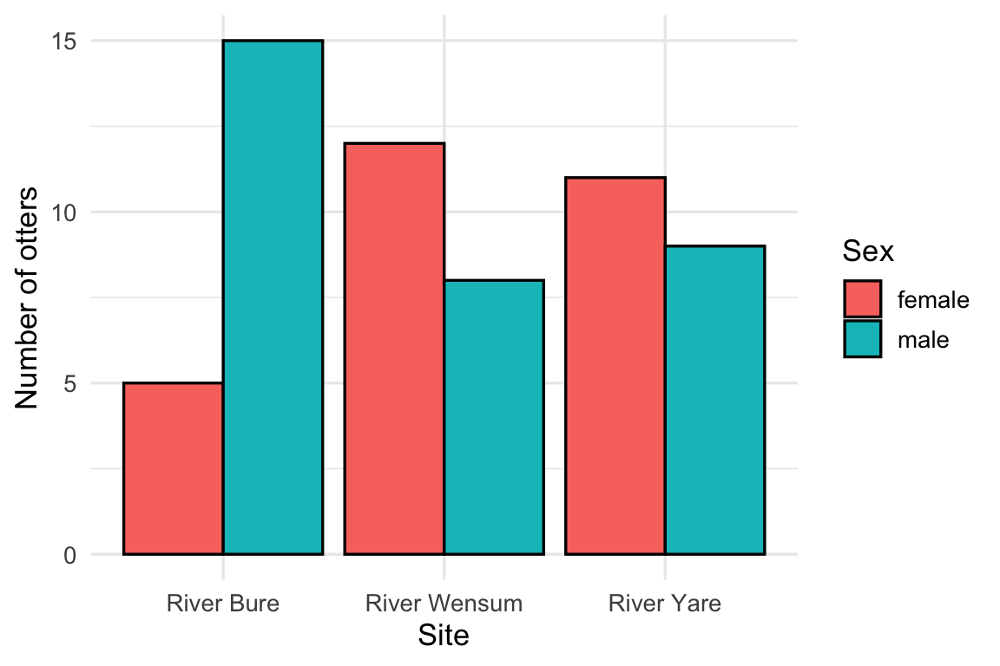
Tip
The main habit to build: before you write any code, say out loud what each variable is and what question you are asking. The plot type usually follows from that.
7.5 Seeing the Whole Distribution
A boxplot is quick and compact, but it squeezes a whole variable into five numbers. Different plots show different parts of the same data. Here we look at body mass (mass_kg) split by sex, and build up from the simplest view to the most detailed.
7.5.1 Reading a boxplot
Before choosing between plots, it helps to know what a boxplot is made of. Every part comes from a summary statistic:
otter_data %>%
group_by(sex) %>%
summarise(
minimum = min(mass_kg),
q1 = quantile(mass_kg, 0.25),
median = median(mass_kg),
q3 = quantile(mass_kg, 0.75),
maximum = max(mass_kg)
)# A tibble: 2 × 6
sex minimum q1 median q3 maximum
<chr> <dbl> <dbl> <dbl> <dbl> <dbl>
1 female 4.82 5.61 6.22 7.22 9.97
2 male 7.2 9.39 9.84 10.4 12.5 | Part of the boxplot | What it shows |
|---|---|
| Thick line in the box | The median, the middle value |
| Bottom and top of the box | The first and third quartiles (q1 and q3), so the box holds the middle 50% of otters |
| Height of the box | The interquartile range (IQR), q3 minus q1 |
| Whiskers | The furthest values within 1.5 times the IQR of the box |
| Individual dots | Outliers, values beyond the whiskers |
What does the height of the box tell you?
7.5.2 One variable, five views
The tabs below show the same data in five ways. Click through them and notice what appears and disappears each time.
ggplot(otter_data, aes(x = sex, y = mass_kg, fill = sex)) +
geom_boxplot(colour = "black") +
labs(x = "Sex", y = "Body mass (kg)") +
theme_minimal(base_size = 13) +
theme(legend.position = "none")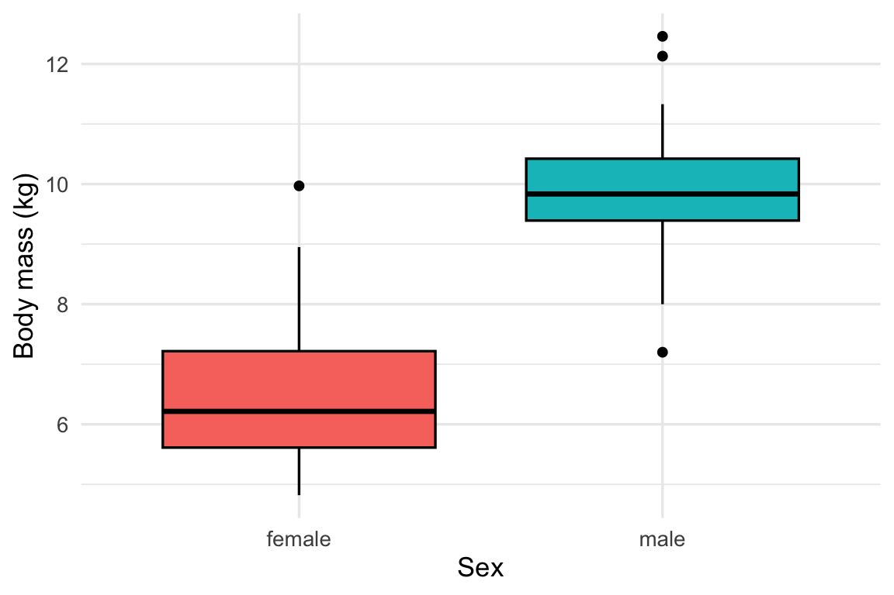
Shows the median, the spread of the middle half, and any outliers. It does not show how many otters there are or what shape the data take between the quartiles.
ggplot(otter_data, aes(x = sex, y = mass_kg, fill = sex)) +
geom_boxplot(colour = "black", alpha = 0.5, outlier.shape = NA) +
geom_jitter(width = 0.1, size = 2) +
labs(x = "Sex", y = "Body mass (kg)") +
theme_minimal(base_size = 13) +
theme(legend.position = "none")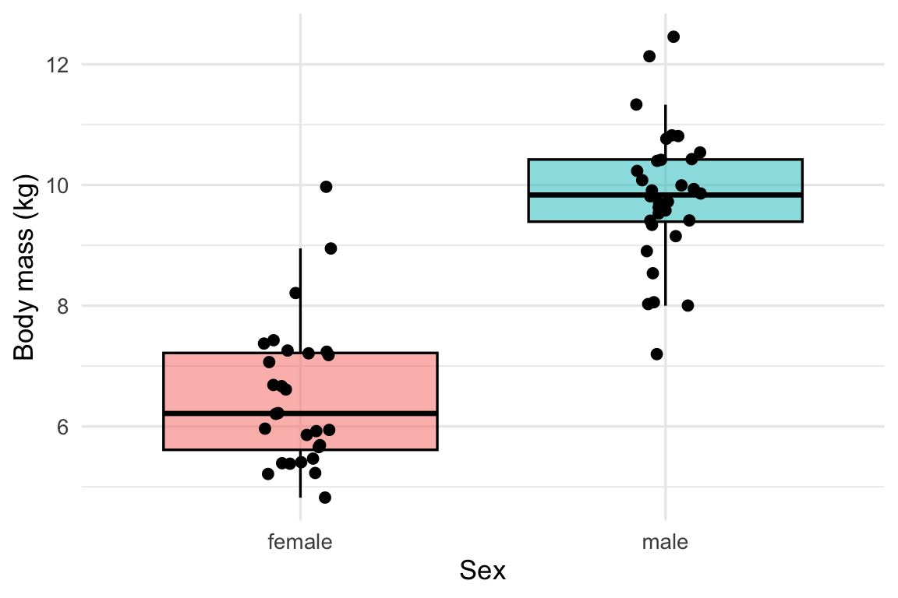
Adds every otter as a point, so you can see the sample size and any gaps or clusters. outlier.shape = NA stops the outliers being drawn twice.
ggplot(otter_data, aes(x = sex, y = mass_kg, fill = sex)) +
geom_violin(colour = "black", trim = FALSE) +
labs(x = "Sex", y = "Body mass (kg)") +
theme_minimal(base_size = 13) +
theme(legend.position = "none")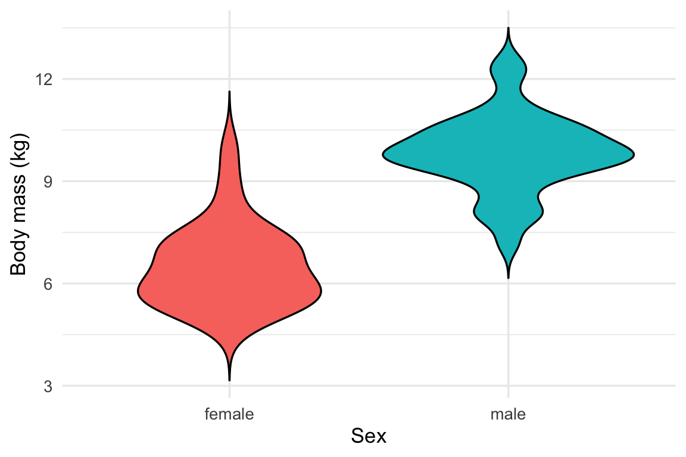
The width of the shape shows where the otters are concentrated. A wide part means many otters at that mass, and a narrow part means few.
ggplot(otter_data, aes(x = mass_kg, fill = sex)) +
geom_density(alpha = 0.5) +
labs(x = "Body mass (kg)", y = "Density", fill = "Sex") +
theme_minimal(base_size = 13)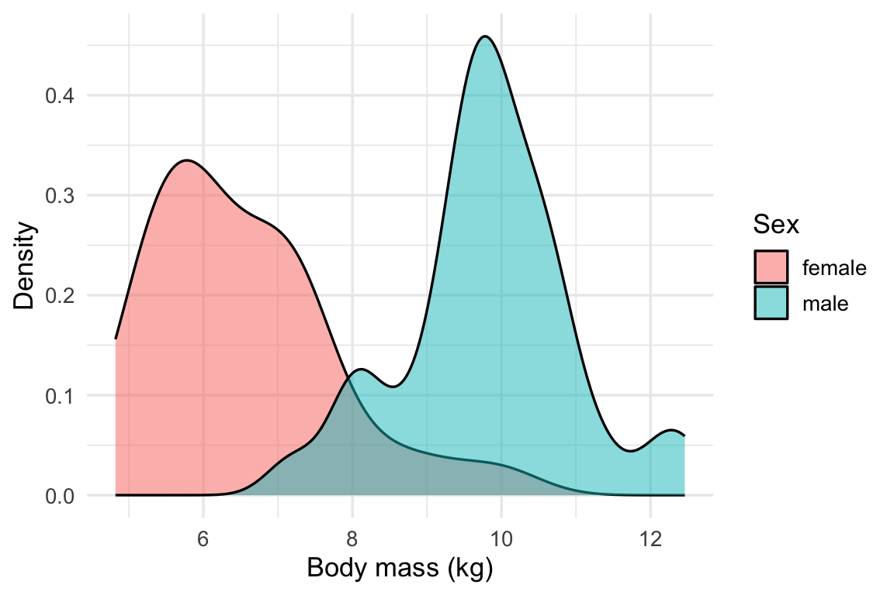
A smoothed histogram. Drawing both sexes on the same axis makes it easy to see how much the groups overlap.
ggplot(otter_data, aes(x = mass_kg, fill = sex)) +
geom_histogram(binwidth = 0.5, colour = "black") +
facet_wrap(~ sex) +
labs(x = "Body mass (kg)", y = "Frequency") +
theme_minimal(base_size = 13) +
theme(legend.position = "none")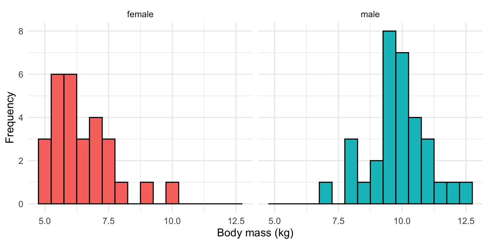
The most literal view. Each bar is a count of otters, and the plot is split by sex so the two shapes can be compared.
You want to know how many otters of each sex were measured. Which view shows this best?
Which view would you choose to see whether the two sexes overlap in body mass?
7.5.3 What a plot can hide
A summary of the whole sample can hide structure inside it. Here is body mass for all otters together, ignoring sex:
ggplot(otter_data, aes(x = mass_kg)) +
geom_histogram(binwidth = 0.5, fill = "lightblue", colour = "black") +
labs(x = "Body mass (kg)", y = "Frequency") +
theme_minimal(base_size = 13)
This histogram is not a clean bell shape. What is the most likely explanation?
ggplot(otter_data, aes(x = mass_kg, fill = sex)) +
geom_histogram(binwidth = 0.5, colour = "black", alpha = 0.7) +
labs(x = "Body mass (kg)", y = "Frequency", fill = "Sex") +
theme_minimal(base_size = 13)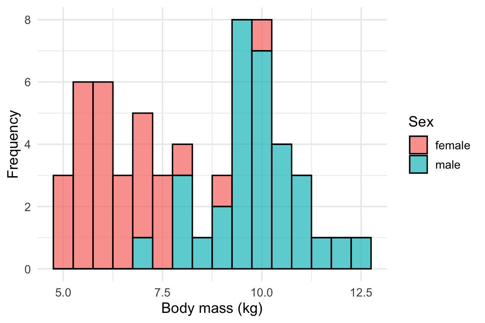
Males and females have different typical masses, so combining them gives a lumpy shape. Neither group is oddly shaped on its own. A single summary of the whole sample would hide this.
Note
This matters for the assumption checks in this module. A Shapiro-Wilk test on the whole variable can fail simply because two groups have been mixed, so it is better to check normality within each group, as we have done throughout.
7.5.4 Putting a summary on top of the raw data
You can also show the mean on a boxplot, to compare it with the median:
ggplot(otter_data, aes(x = sex, y = tick_count, fill = sex)) +
geom_boxplot(colour = "black", alpha = 0.6) +
stat_summary(fun = mean, geom = "point", shape = 23, size = 4, fill = "white") +
labs(x = "Sex", y = "Tick count") +
theme_minimal(base_size = 13) +
theme(legend.position = "none")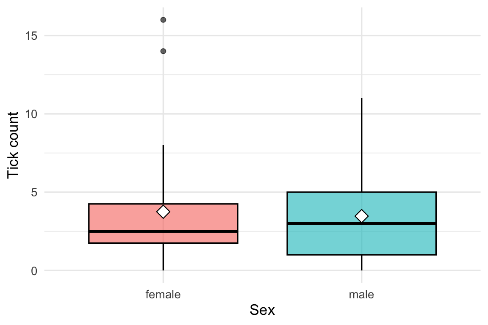
The white diamond is the mean and the thick line is the median.
In a right skewed variable such as tick_count, where do you expect the mean to sit compared with the median?
7.5.5 Choosing between them
| If you want to see | Try |
|---|---|
| A quick summary of centre and spread for several groups | Boxplot |
| The summary and the sample size | Boxplot with geom_jitter() |
| The shape of each group | Violin or faceted histogram |
| How much groups overlap | Density plot |
| Whether a variable is skewed | Histogram |
Tip
No single plot shows everything. When you are exploring new data, make two or three different plots of the same variable before you decide what it looks like.